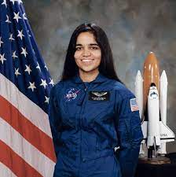
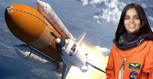

About Kalpana Chawla
Kalpana Chawla was an Indian-American astronaut and the first woman of Indian origin to go to space.
She was born on March 17, 1962, in Karnal, Haryana, India. Chawla moved to the United States to pursue her dreams of becoming an astronaut and earned a Master of Science degree in aerospace engineering. She joined NASA in 1995 and flew her first space mission aboard the Space Shuttle Columbia in 1997.
Tragically, on February 1, 2003, Kalpana Chawla and her six crewmates lost their lives when the Space Shuttle Columbia disintegrated during re-entry.

First space mission
first space mission began on 19 November 1997,
as part of the six-astronaut crew that flew the Space Shuttle Columbia flight STS-87.
Chawla was the first Indian woman to go in space. She spoke the following words while traveling in the weightlessness of space, "You are just your intelligence.
" She had traveled 10.67 million km, as many as 252 times around the Earth.
On her first mission, Chawla traveled 10.4/6.5 million miles in 252 orbits of the earth, logging more than 376 hours (15 days and 16 hours) in space.[18][7] During STS-87, she was responsible for deploying the Spartan Satellite which malfunctioned, necessitating a spacewalk by Winston Scott and Takao Doi to capture the satellite.
A five-month NASA investigation exonerated [19] Chawla by identifying errors in software interfaces[20] and the defined procedures of the flight crew and ground control. After the completion of STS-87 post-flight activities, Chawla was assigned to technical positions in the astronaut office to work on the space station.